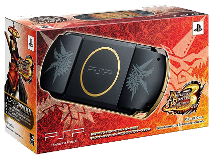
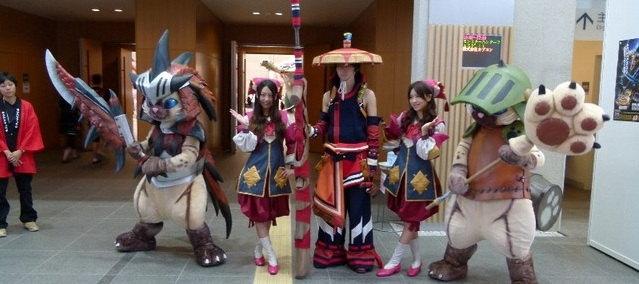

Monster Hunter Freedom Unite, también conocido como Monster Hunter Portable 2nd G por su nombre original en Japón, es una secuela directa de Monster Hunter Freedom 2. Esta entrega es la ultima de la segunda generacion de la franquicia. El juego cuenta con más de 400 misiones, unas 500 horas de juego y más de 2000 armas y armaduras. Esta catalogado como un juego de action rpg y cuenta con un modo para 4 jugadores, popular hasta hoy en dia.
Demos un paseo por los tiempos en el que este fue lanzado, primeramente se lanzo en japon en marzo del año 2008 y como siempre los japoneses se dejaron todo los mejor para ellos ya que alla la franquicia es muy valorada por los jugadores, al momento de su salida al mercado nipon este conto con una "edicion especial" que incluye el juego, dos bolsas de distintos tamaños, una correa, y un decorado de bronce PSP, tambien se vendieron figuras, y consolas con diseños realmente exquisitos relacionados con el juego, cabe aclarar que para ese entonces la franquicia monster hunter no habia pegado mucho en america y occidente, por lo que oficialmente esas ediciones y sus accesorios nunca salieron de japon. para que entendamos mejor el impacto de este gran titulo en japon, basta con decir que en el año 2008 para el mes de octubre, osea 7 meses pasados desde su lanzamiento, era el juego mas vendido de la consola con 2,5millones de copias vendidas, habian personas que adquirian la psp tan solo por el monster hunter. Esto a mi parecer tiene gran merito debido a que en la epoca ya jugabamos con xbox360 ps3 y wii y sin embargo era la psp junto con titanes como monster hunter/daxter/gta/God of War: Chains of Olympus/Crisis Core: Final Fantasy VII la que se llevaba las ventas. estas increibles ventas fueron las que impulsaron a capcom a sacar el juego para otros sectores del mundo como europa y america, cosa que realmente es de valorar ya que la franquicia, como ya dije antes, no era, aun, populares en estos lugares. por ultimo para terminar con este punto me gustaria mencionar titulos de ese mismo año que la rompieron en otras plataformas: left 4 dead, mario kart, gta iv, fallout 3.(borrador)
